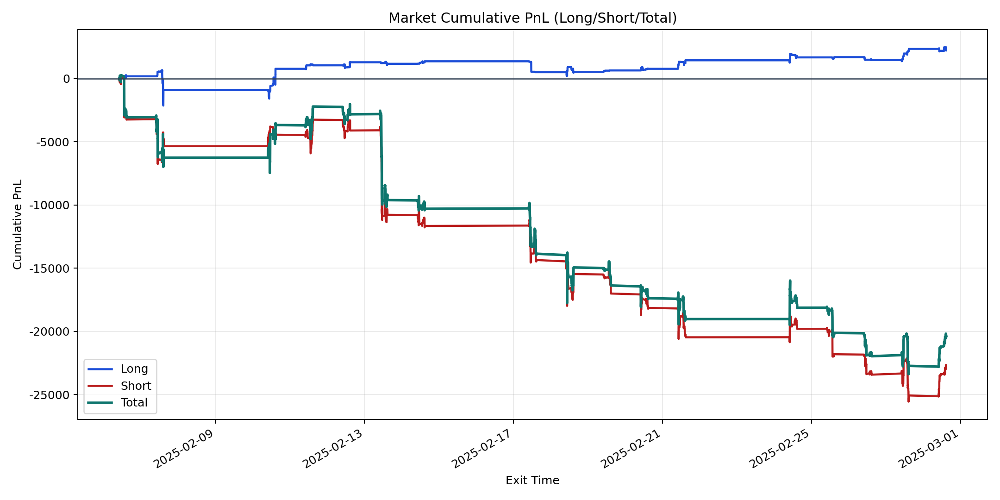
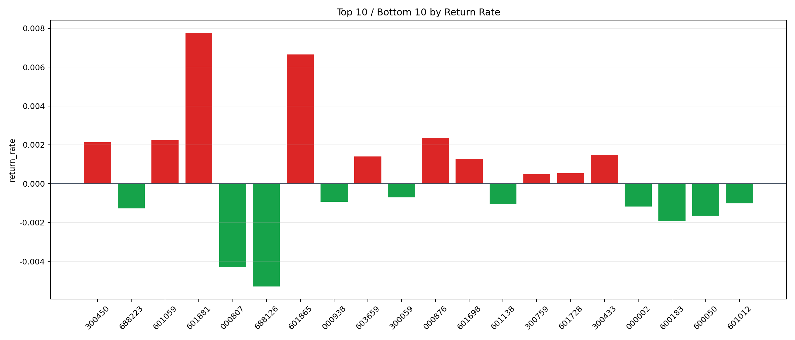

| repo_root | /home/haoranyou/data/output/alpha0.4_1w_5s_3ticks_index_filter/index_weights_300 |
|---|---|
| period_months | 1 |
| period_label | 2025-02-06_to_2025-02-28 |
| start_time | 2025-02-06 10:01:32 |
| end_time | 2025-02-28 14:45:02 |
| n_trades | 4910 |
| n_symbols | 29 |
| total_pnl | -20430.843650000057 |
| long_total_pnl | 2229.5151999999925 |
| short_total_pnl | -22660.358850000048 |
| total_entry_notional | 45149347.0 |
| long_entry_notional | 7706281.0 |
| short_entry_notional | 37443066.0 |
| total_return_rate | -0.0004525169245526421 |
| long_return_rate | 0.0002893114331024255 |
| short_return_rate | -0.0006051950673590685 |
| top_symbols_by_return | ["601881", "601865", "000876", "601059", "300450", "300433", "603659", "601698", "601728", "300759"] |
| bottom_symbols_by_return | ["688126", "000807", "600183", "600050", "688223", "000002", "601138", "601012", "000938", "300059"] |

